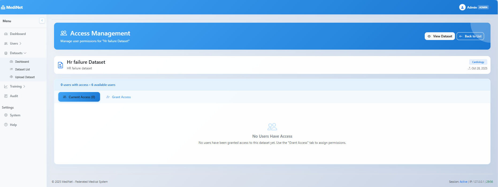

dashboard
Dataset Dashboard Overview
The Dataset Management dashboard provides a comprehensive overview of your medical datasets with key metrics and quick actions:
Dataset Management dashboard with overview metrics (click to expand)
Dashboard Metrics
storage
Total Datasets
Number of datasets currently available in the system
cloud_upload
Storage Used
Total storage space consumed by all datasets
people
Active Researchers
Number of researchers with dataset access
shield
Access Assignments
Total dataset access permissions granted
Quick Actions
cloud_upload
Upload New Dataset
Add new medical datasets with automated validation and processing
list
Manage All Datasets
View, edit, and organize all available datasets in the system
analytics
Advanced Analytics
Access detailed statistics and usage patterns for datasets
settings
System Settings
Configure dataset storage, validation rules, and access policies
cloud_upload
How to Upload a Dataset
Administrators can upload new medical datasets to make them available for federated learning research. Follow these steps to upload and configure a dataset:
Step 1: Access the Upload Interface
- Navigate to the "Datasets" section in the sidebar
- Click on "Upload Dataset" to open the upload interface
- The upload page displays file selection and dataset information forms

Dataset upload interface with drag-and-drop file selection (click to expand)
Step 2: Select Your Dataset File
- Drag and drop your file into the designated area, or click to browse and select
- Supported formats: CSV, JSON, Parquet, H5, NPY
- No size limit for medical datasets - system handles large files efficiently
- The system performs automatic file type verification
automated_processing
Automated Processing: Your dataset will be automatically validated, anonymized, and optimized for federated learning once uploaded. The system ensures data privacy and compatibility with the MediNet infrastructure.
Step 3: Fill in Dataset Information
Dataset information form with required fields (click to expand)
Data Type Selection
info
Current Version - Tabular Data Only: The current version of MediNet supports tabular data exclusively (CSV, structured datasets). Future releases will expand support to include medical imaging (DICOM, NIfTI), time series data (EEG, ECG), text data (clinical notes), and genomic data.
Medical Domain Categories
Select the appropriate medical domain to facilitate dataset organization, discovery, and filtering:
Cardiology
Neurology
Oncology
Radiology
Pathology
Dermatology
Ophthalmology
General Medicine
Other
Target Column Requirement
security
Security Requirement - Pre-defined Target Column: Administrators must specify the target column (prediction variable) when uploading datasets to prevent security attacks in federated learning. This pre-definition ensures that researchers cannot select arbitrary columns as prediction targets when launching training sessions. Without this control, a malicious researcher could create models designed for patient re-identification by selecting sensitive columns (e.g., patient IDs, names) as targets. By fixing the target column at upload time, the system maintains data privacy and prevents re-identification attacks.
Step 4: Upload and Validation
- Click "Upload Dataset" to initiate the upload process
- The system performs automated security validations:
- File type verification ensures format compatibility
- Automatic PHI (Protected Health Information) detection
- K-anonymity validation (k≥25) for privacy protection
- Null value rejection to maintain data quality
- Upon successful validation, you'll see "Upload Successfully" message
- The system automatically returns you to the Dataset Dashboard
check_circle
Upload Complete: Your dataset is now available for researchers to query and use in federated learning training sessions. The dataset appears in the "Recent Datasets" section and is searchable by medical domain, name, and metadata.
admin_panel_settings
How to Manage Dataset Access
Administrators control which researchers can access specific datasets for federated learning training. Access management includes granting permissions, setting training rights, and revoking access when needed.
Step 1: Navigate to Dataset List
From the Dataset Management section, view all available datasets in the system:
- Go to "Datasets" in the sidebar and select "Dataset List"
- The list displays all datasets with their domain, size, format, and current access status
- Use search and filter options to locate the specific dataset
Complete dataset list with management options (click to expand)
Step 2: Access the Manage Access Interface
Click the "Manage Access" button (people icon) in the Actions column for the target dataset. This opens the Access Management interface.
Dataset list with Manage Access action highlighted (click to expand)
Step 3: View Current Access Status
The Access Management interface displays two tabs:
- Current Access: Shows users who already have permissions for this dataset
- Grant Access: Interface for assigning permissions to new users

Access Management interface with empty access list (click to expand)
info
Access Control: By default, no users have access to newly uploaded datasets. Administrators must explicitly grant permissions to researchers who need to use the dataset for training.
Step 4: Grant Access to Researchers
Click the "Grant Access" tab to assign dataset permissions:
Grant Access interface with permission configuration (click to expand)
Permission Types
model_training
Training Permissions
Grants the researcher ability to launch federated learning training sessions using this dataset. The researcher can configure model architectures, set hyperparameters, and monitor training progress.
analytics
Metadata Access
Allows the researcher to query dataset statistics, column information, and metadata via the MediNet Client API. Useful for understanding data structure before designing models.
Step 5: Confirm Access Grant
After selecting the desired permissions, click "Grant Access" to finalize. The system will:
- Add the researcher to the dataset's access list
- Enable API access for the researcher via MediNet Client
- Display a success confirmation message
- Automatically switch to the "Current Access" tab showing the updated list
Step 6: Manage Existing Access
In the "Current Access" tab, you can view and manage all users with permissions:
Current Access tab with user permissions and revoke option (click to expand)
Available Actions
edit
Modify Permissions
Toggle Training or Metadata permissions on/off for existing users using the permission switches
block
Revoke Access
Click "Revoke Access" button to completely remove user permissions from this dataset
security
Access Revocation: When access is revoked, the researcher immediately loses all permissions for this dataset. Any ongoing training sessions will be terminated, and API access will be denied. Consider notifying the researcher before revoking access.